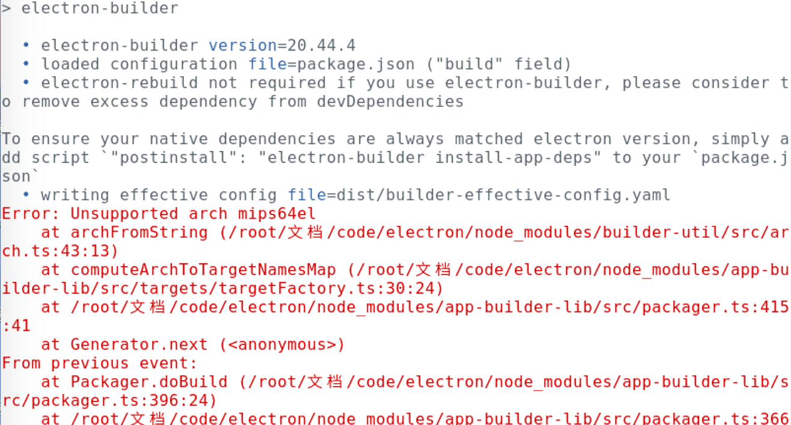

背景
最近在一台龙芯电脑（系统是中兴新支点，Linux）上开发electron应用。
PS：龙芯是国产的cpu，采用是mips架构，类似x86、arm。
安装NodeJS
安装步骤请查看：https://www.cnblogs.com/lovesong/p/11589813.html
安装依赖
如果使用到一些不支持 mips arch 的 node 插件，就会导致 install 依赖失败。这时需要添加对 mips 的支持或替换为其他的解决方案。
1、electron
在安装electron依赖时候就出了问题，没有找到 for mips 的包！！！
就在我快放弃时候，在 electron 1.8.2 版本下面找到了mips的包。于是原先使用的5.0.10版本就降级为1.8.2，部分版本不兼容的electron接口也做降级处理。
PS：之所以不编译源代码。首先拉取源码就是个很麻烦的事情，另外编译一旦出异常更麻烦，最后即便是编译成功，如何发布包也是问题。
2、@journeyapps/sqlcipher
这个sqlite数据库操作的包虽然安装成功了，但是在执行查询类sql时候，整个应用会崩溃。
换了其他相关sqlite包，也都有这问题。
最后，没办法，只能用HTML5 websql 代替。
3、serial-number
这个包是获取电脑的序列号的，但在龙芯电脑也用不了。
没办法，删除这个依赖。
依赖rebuild
正常。
开发调试
正常。
打包
在编译安装包（rpm）时候，又发现了一个大问题，electron-builder 没法编译mips64el的包！

经过几番尝试，想打出 rpm 包，得分为两个步骤：
1、electron-packager 打出 unpack 的包（类似绿色版）。
2、再使用 electron-installer-redhat 将 unpack 的包 编译为 rpm 包。
rpm命令
1、安装
rpm -ivh xxx.rpm2、卸载
rpm -e PACKAGE_NAME 问题集
1、嵌套的iframe页面白屏
//禁用GPU加速。
app.disableHardwareAcceleration()